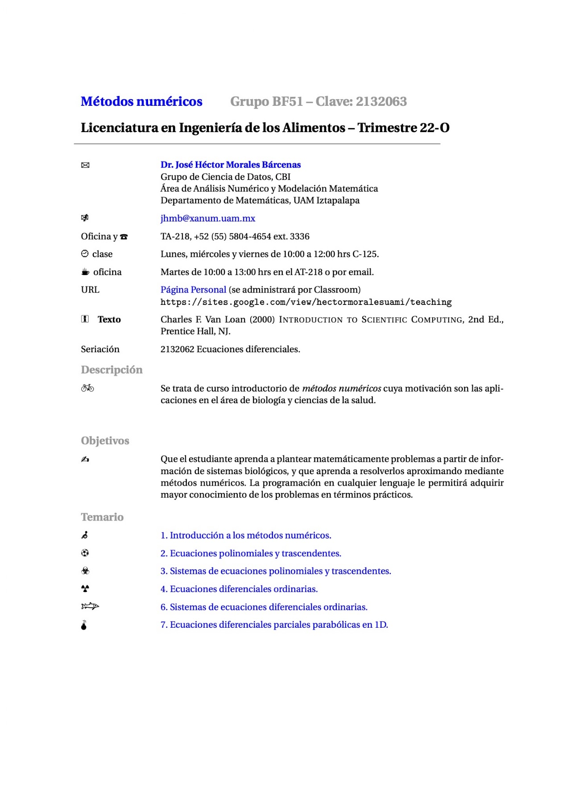
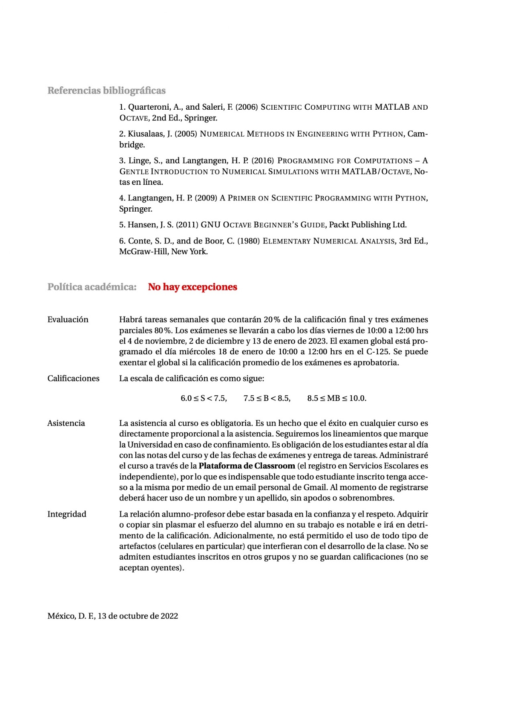
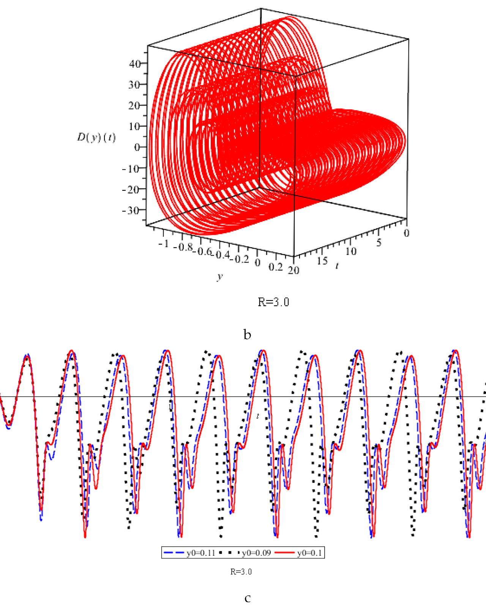
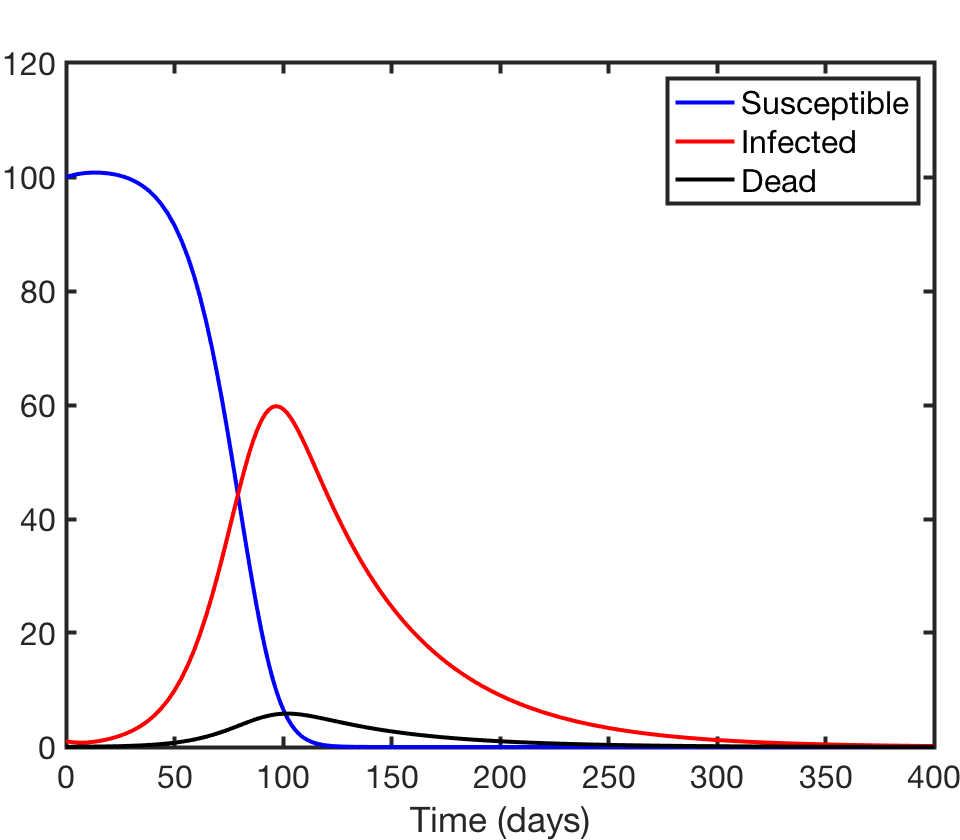
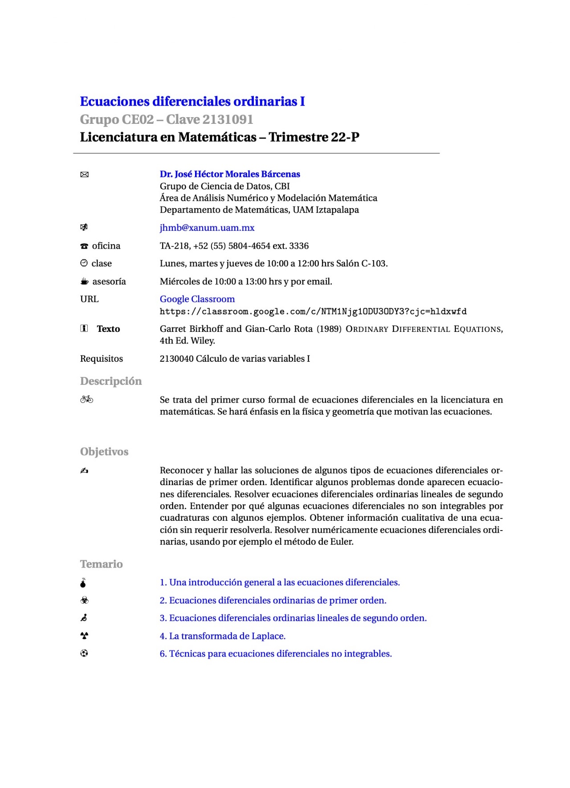
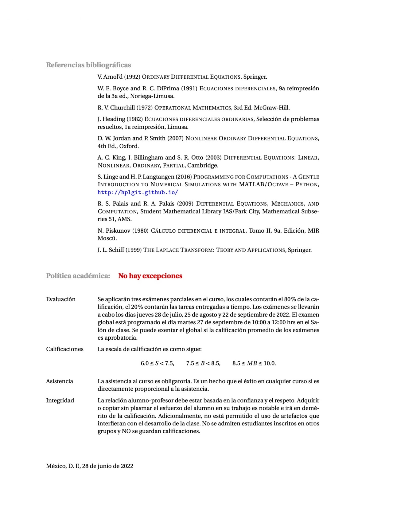

Métodos Numéricos


Ecuaciones Diferenciales Ordinarias I
EDO I es un curso introductorio de la Licenciatura en Matemáticas.






EDO I es un curso introductorio de la Licenciatura en Matemáticas.



